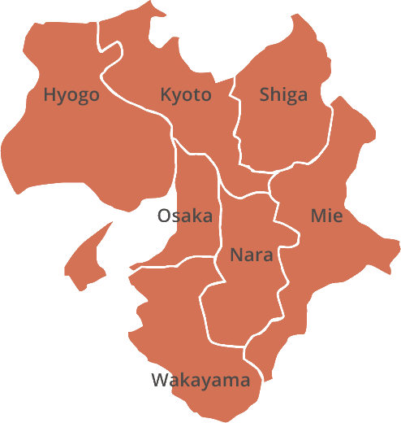

¿Cuál es el objetivo de esta web?
La zona de Kansai es una región situada en el centro de Japón y es considerada una de las zonas más históricas y culturales del país. Esta zona es famosa por sus ciudades principales: Kyoto, Osaka y Nara, que ofrecen una gran cantidad de atracciones turísticas y culturales. Kyoto es famosa por sus templos y santuarios históricos, Osaka es conocida por su vibrante vida nocturna y deliciosa gastronomía, mientras que Nara es famosa por su parque de ciervos y sus templos antiguos. En nuestra página web, podrás encontrar información detallada sobre estas tres ciudades, así como consejos de viaje para ayudarte a planear tu visita.
Además de las tres ciudades principales, la región de Kansai es conocida por su gastronomía, festivales y lugares históricos. La región es famosa por su deliciosa comida, como el takoyaki de Osaka y el ramen de Kyoto. En nuestra página web, encontrarás información detallada sobre los platos más populares de la región, así como recomendaciones de los mejores lugares para probarlos. También podrás encontrar información sobre los festivales y eventos más importantes de la zona, que atraen a turistas de todo el mundo cada año. Y, por supuesto, no podemos olvidar la rica historia y cultura de la región, que se refleja en sus antiguos templos, jardines y museos. En nuestra página web, podrás encontrar información detallada sobre los lugares históricos más importantes y las actividades culturales que no te puedes perder durante tu visita.
En resumen, la región de Kansai es una de las zonas más históricas y culturales de Japón, y nuestra página web está diseñada para ayudarte a explorar esta maravillosa región en profundidad. Desde la información detallada sobre las tres ciudades principales hasta los consejos de viaje, la gastronomía, los festivales y la cultura, nuestra página web tiene todo lo que necesitas para planear tu viaje a Kansai y disfrutar de lo mejor que esta región tiene para ofrecer.